Schneide aus den dir zugeschickten Audio-Files ab dem Zeitpunkt jeweils ein Stück mit der Länge 5 Sekunden und speichere dieses als WAV-Datei ab. Parameter für Musik: fa=44,1 kHz, stereo, für Sprache: fa=8 kHz mono, beide 16 bit Auflösung. Beim Schneiden achtest du darauf, dass der Schnitt am Beginn einer musikalischen Figur bzw. eines Satzes liegt.
Musikaufnahme
Erkläre, warum die Audio-Files unterschiedliche Abtastfrequenzen haben
Die Abtastfrequenz für die Musik-Datei ist 44,1 kHZ, währenddessen die Sprach-Datei 8kHZ beträgt. Das hat den Grund, das die wesentlichen Aspekte von Stimmen eine deutlich niedrigere Requenz benötigt, um erfasst zu werden
Lies die Musik- und die Sprachdatei mit wave_io ein und erkläre die Angaben im Header
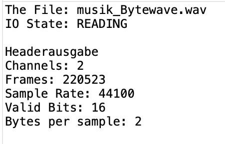 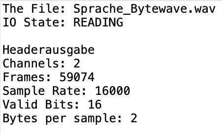
Channels: sind die Kanäle Frames: enthalten die Samples für alle Kanäle Sample Rate: Abtastrate / Abtastfrequenz, sagt wie oft pro Sekunde das Audiosignal gemessen wird. Valid Bits: ist die Auflösung Bytes per Sample: Anzahl der Bytes pro Sample zeigt, wie viel Speicherplatz eine einzelne Messung braucht
Berechne die Bitrate für die beiden Dateien
Allgemein: Bitrate = Abtastfrequenz * Bits * Kanäle Berechnung für die Musik-Datei Bitrate = 44100 * 16 * 2 = 1.411.200 bits/s Berechnung für die Sprach-Datei Bitrate = 16000 * 16 * 2 = 511.200 bits/s
Rauschen
Modifiziere wave_io dahingehend, dass die Samples in der WAV-Datei in eine (lesbare) ASCII- Datei geschrieben werden. Lies die von mir geschickten Sinusdateien (Sampling-Frequenz: 16 kHz) Bestimme aus den resultierenden Zahlenfolgen in der ASCII-Datei die Frequenz der Sinus- Schwingungen.
Verarbeite Datei: sine_hi03.wav
Sample-Rate: 16000.0 Hz
ASCII-Datei erstellt: ./data h/sine_hi_output.txt
Output sine_hi03:
Download Text File
Verarbeite Datei: sine_lo03.wav
Sample-Rate: 16000.0 Hz
ASCII-Datei erstellt: ./data l/sine_lo_output.txt
Output sine_lo03
Download Text File
Output:
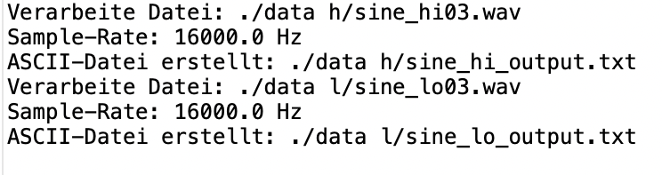
Frequenz der Sinusschwingung = Samplingfrequenz (Abtastfrequenz) / Anzahl der Werte pro Periode Berechnung für die Musik-Datei sine_hi03.wav Anzahl der Werte pro Periode = 8 Frequenz der Sinusschwingung = 8000 / 8 = 1000 Hz
Begründung: Die Frequenz einer periodischen Funktion ist invers proportional zur Anzahl der Abtastungen pro Periode. Da sich die Werte nach 8 Abtastungen wiederholen, entspricht dies einer vollständigen Sinusperiode, und somit bestimmt die Anzahl der Abtastungen zusammen mit der Samplingfrequenz die Frequenz der Schwingung.
Berechnung für die Musik-Datei sine_lo03.wav Anzahl der Werte pro Periode = 16 Frequenz der Sinusschwingung = 8000 / 16 = 500 Hz Begründung: Die Periode dieser Sinusschwingung erstreckt sich über 16 Werte, das bedeutet, dass die Schwingung langsamer ist als die vorherige, die 8 Werte pro Periode hatte. Die Frequenz ist die Anzahl der vollständigen Schwingungen pro Sekunde, und sie hängt davon ab, wie viele Werte eine Periode darstellen und wie häufig diese Werte pro Sekunde abgetastet werden. Da sich das Muster nach 16 Werten wiederholt und die Samplingfrequenz bekannt ist (angenommene 8000 Hz), ergibt sich eine Schwingungsfrequenz von 500 Hz.Überprüfe deine Schätzung mit dem Programm PRAAT. (Vorgehensweise: Read file..., To Spectrum..., Edit)
sine_hi03.wav:
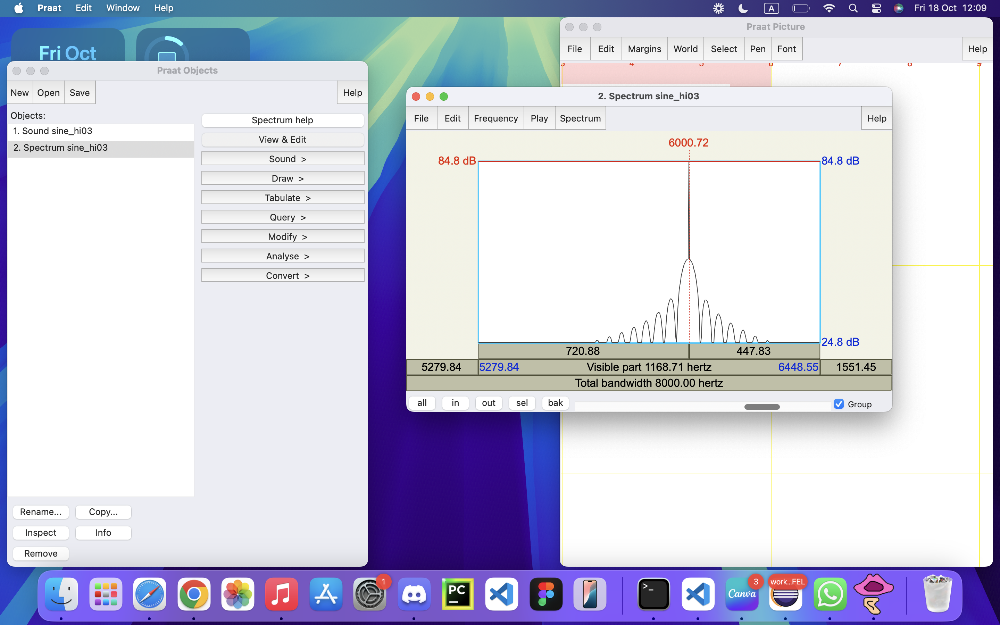sine_lo03.wav:
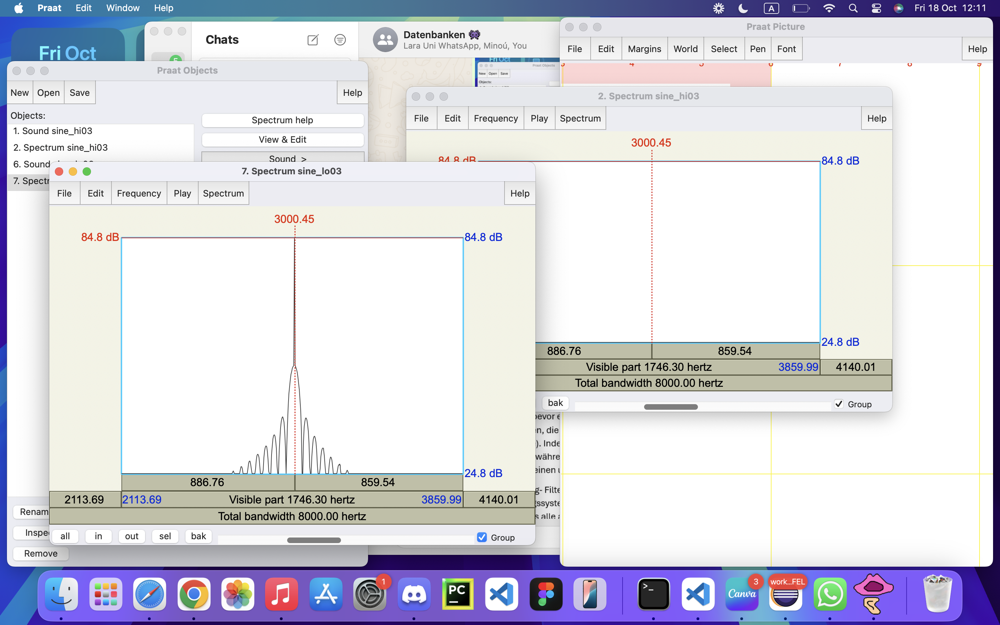Bei der zeitlichen Diskretisierung eines Analogsignals muss das sogenannte Abtasttheorem eingehalten werden. Wie lautet es und wie lässt sich der Grenzfall, für den es gerade noch gilt, illustrieren? Erstelle hierzu eine Zeichnung und erläutere.
fa≥2⋅fmax - Fa à Abtastfrequenz - Fmax à maximale Frequenzkomponente des zu abtastenden Signals Definition: Das Abtasttheorem besagt, dass die Abtastfrequenz mindestens doppelt so hoch sein muss wie die höchste im Signal vorkommende Frequenz, um das Signal korrekt zu rekonstruieren. Wird das Signal mit einer geringeren Frequenz als dem Doppelten der maximalen Frequenz abgetastet, tritt der Effekt des Aliasings auf, bei den Frequenzen falsch dargestellt werden und somit Informationen verloren gehen 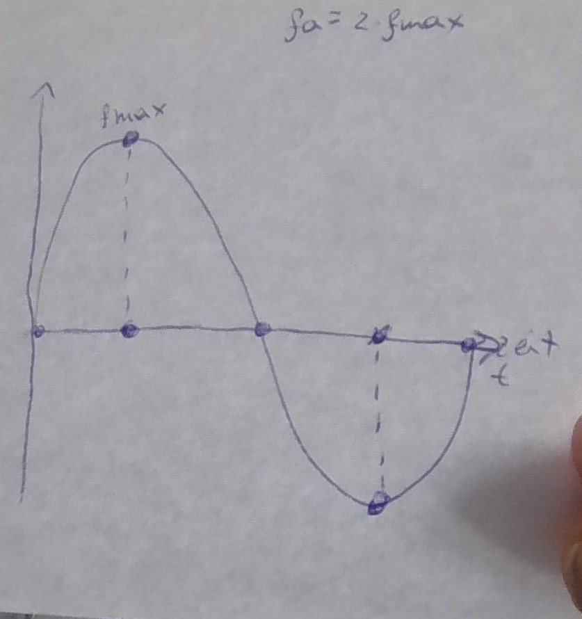 - Zwei Punkte pro Periode - Abtastpunkte liegen auf den Extremen der Kurve (Maximum, Minimum)
Bei herkömmlichen Soundkarten tritt systembedingt kein Aliasing auf, weil das Audiosignal stets geeignet vorbehandelt wird. Wie sieht diese Vorbehandlung aus?
Um Aliasing zu verhindern, wird das Audiosignal einem Tiefpassfilter unterzogen, bevor es digitalisiert wird. Dieser Tiefpassfilter/ Anti-Aliasing-Filter, entfernt Frequenzen, die über der Nyquist-Frequenz liegen (halbe Abtastrate). Indem hohen Frequenzen entfernt werden, wird verhindert, dass sie während der Digitalisierung als niedrigere, unerwünschte Frequenzen erscheinen und somit das Signal verfälschen - Tiefpassfilter/ Anti- Aliasing- Filter à o Für Datenerfassungssysteme erforderlich o Sicherstellung, dass alle abgetasteten Signale genau rekonstruiert werden können o Filtereigenschaften à Bandbreite, Amplitudenauflösung, Abtastrate - Nyquist- Frequenz à halbe Abtastfrequenz/rate
Mit einem kleinen Trick lässt sich Aliasing jedoch nachweisen. Diese auch als Down-Sampling bekannte Methode besteht darin, dass man bei einer WAV-Datei z.B. jeden zweiten Abtastwert wegwirft. Man erhält so eine Wellenform, die genau die Hälfte der ursprünglichen Abtastfrequenz aufweist. Wenn man das Signal nicht vorher bandbegrenzt hat, können Aliasing-Verzerrungen hörbar werden. Modifiziere wave_io dahingehend, dass vom eingelesenen Audiosignal jeder zweite Abtastwert verworfen wird und das resultierende Signal abgespeichert wird. Der Header muss natürlich entsprechend verändert werden
Musik-Datei musik_Bytewave.wav:
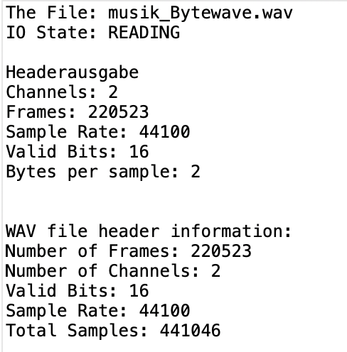Sprache-Datei Sprache_Bytewave.wav:
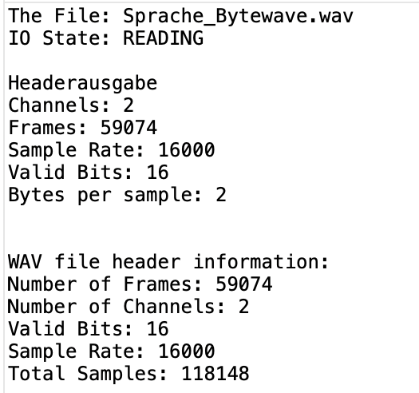Wende das erstellte Programm auf die von mir geschickten Sinusdateien an (sine_hiXX.wav und sine_loXX.wav) an. Welche Frequenzen erscheinen nach dem Down-Sampling? Was würde passieren, wenn man geeignet bandbegrenzen würde?
sine_hi03.wav:
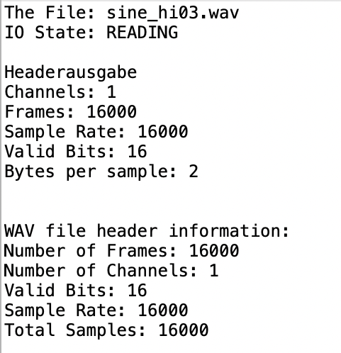sine_lo03.wav:
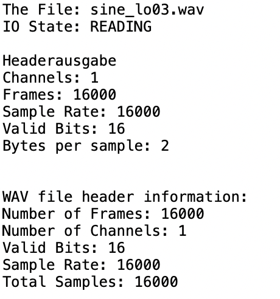Frequenzen nach dem Downsampling:- Wenn das Originalsignal Frequenzen im Bereich von 0 bis 8 kHz hatte, bleiben diese Frequenzen auch nach dem Downsampling korrekt erhalten. - Frequenzen oberhalb von 8 kHz werden jedoch nach dem Downsampling als tieferliegende Frequenzen interpretiert, weil sie die neue Abtastfrequenz überschreiten. Dies führt zu Aliasing, also einer Überlagerung von hohen Frequenzen als niedrigere Frequenzen.
Um Aliasing zu verhindern, sollte das Signal vor dem Downsampling bandbegrenzt werden. Das bedeutet, man müsste mit einem Tiefpassfilter alle Frequenzen oberhalb der halben Abtastfrequenz (hier 8 kHz) entfernen. Dadurch bleiben nur die Frequenzen, die korrekt dargestellt werden können, und Aliasing wird vermieden. Mit einer geeigneten Bandbegrenzung würde das Downsampled-Signal die richtigen Frequenzen ohne Verzerrungen darstellen, da alle problematischen hohen Frequenzen herausgefiltert würden.
Nun wende das Downsampling auf deine Sprachdatei an und beschreibe, wie sich der Klang verändert. Erkläre, warum das passiert!
Die herkömmlichen PC-Soundkarten arbeiten meist entweder mit 16 oder 8 bit-Auflösung. Wie groß ist die Anzahl bei diesen beiden Werten darstellbaren Amplitudenwerten?
Allgemein: Anzahl der Werte = 2^bits 16 bit-Auflösung = 2^16 = 65.536 8 bit-Auflösung = 2^8 = 256
Modifiziere wave_io dahingehend, dass die Bitanzahl reduziert wird. Dazu werden alle Samples durch eine Potenz von 2 geteilt (Integer-Division ohne Rest). Damit das resultierende Signal nicht leiser wird als das Original, wird die Operation durch Multiplikation mit derselben 2er Potenz kompensiert. Zu beachten: Der Datentyp hat nach wie vor 16 bit!
Mit dem entstandenen Programm sollen nun die in Aufgabe 1 erzeugten Wave-Dateien (Sprache und Musik) bitreduziert werden. Ab welcher Bitanzahl tritt eine hörbare, also deutliche Verschlechterung der Qualität ein? Bei wie viel Bit ist das Sprachsignal noch verständlich?
Bei einer Reduzierung von 8bit hört man schon eine hörbare Verschlechterung bei der Musik-Datei
Musik_8_Bit
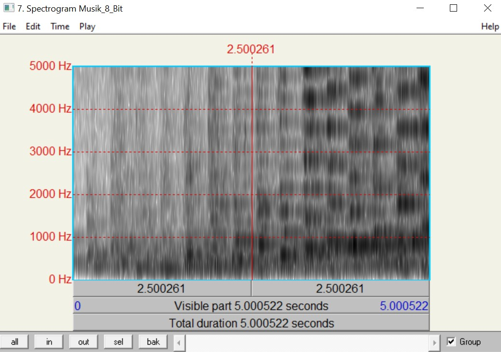
Ab 4bit ist die Musik fast nicht mehr zu erkennen
Musik_4_Bit
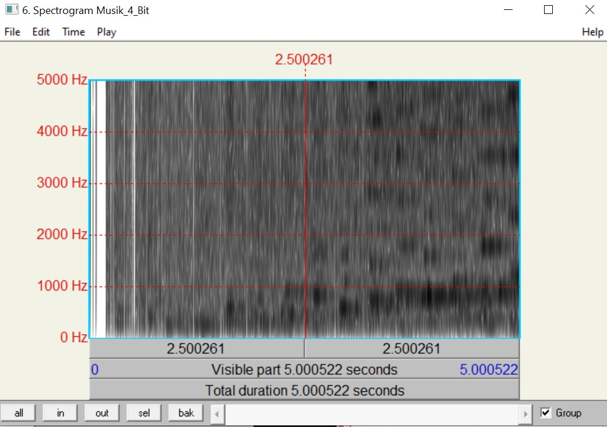
Bei der Sprach-Datei ist die Stimme bei 8bit noch deutlich zu erkennen, zwar hört man ein
leichtes Rauschen, aber ist noch alles klar zu erkennen
Sprache_8_Bit
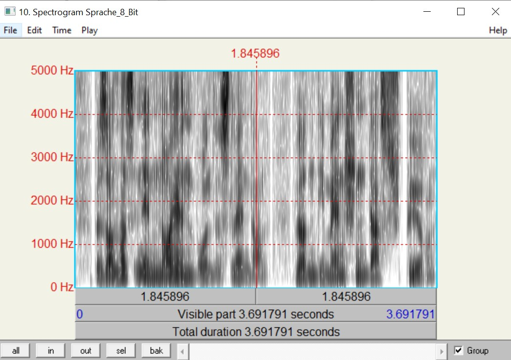
Bis zu einer Reduzierung auf 4 bit ist es noch möglich die Sprache in einer schlechter Qualität
noch zu verstehen
Sprache_6_Bit
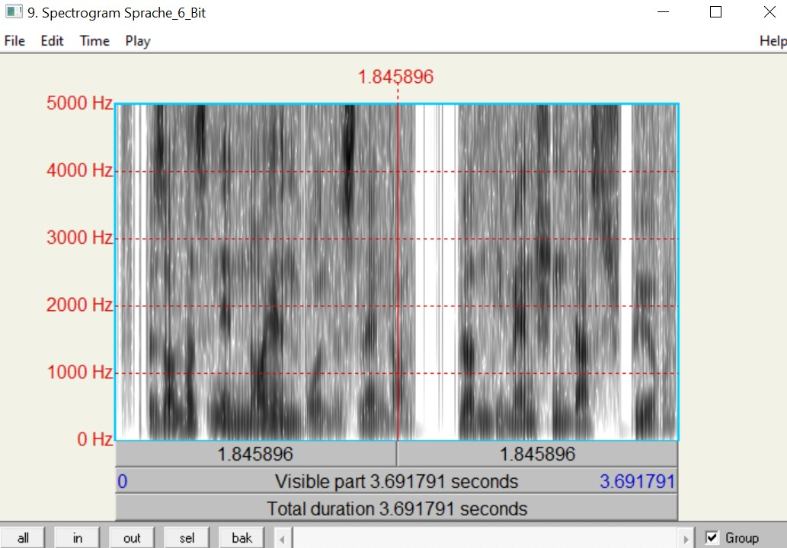
Sprache_4_Bit
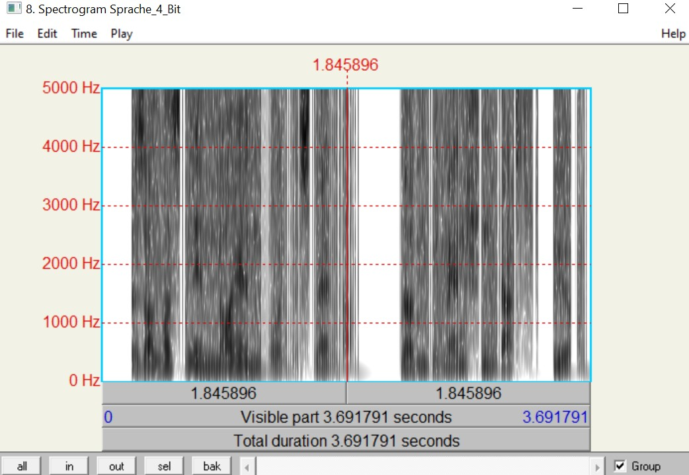
Was charakterisiert das entstehende Quantisierungsgeräusch bei der Bitreduzierung und macht es besonders störend?
- Ist weitgehend unabhängig von der Amplitude/Lautstärke des Nutzsignals, aber bei leisen Passagen stärker wahrnehmbar
- Entsteht durch den Quantisierungsfehler bei der Umwandlung von wertekontinuierlichen zu wertediskreten Signalen
- Das Rauschen ist zufällig verteilt
- Tritt im gesamten Frequenzbereich auf, wobei bestimmte Bereiche stärker betroffen sein können, und beeinträchtigt die Klangqualität insgesamt
- Ist unabhängig vom Nutzsignal und daher auch bei leisen Passagen hörbar
- Durch zufällige Verteilung ist das Rauschen schwer vorhersehbar und dadurch schwieriger zu unterdrücken
Modifiziere dein Programm noch einmal so, dass auch das Differenzsignal zwischen Original und bitreduziertem Signal, d.h. der Quantisierungsfehler ausgegeben werden kann. Dabei musst du bedenken, dass z.B. bei der 1 Bit Reduzierung das Quantisierungsrauschen nur von -1 bis +1 verlaufen würde. Dieser Wertebereich wäre viel zu klein, als dass man das Rauschen beim Abspielen als 16bit-Wert noch hören könnte. Daher muss das Rauschen durch Multiplikation mit einer 2er Potenz verstärkt werden. In anderen Worten: Hat man vorher durch 2^n geteilt, sollte man das Differenzsignal vor dem Abspeichern mit 2^(16-n-1) multiplizieren. So ist sichergestellt, dass der Verstärkungsfaktor mit der Anzahl der gelöschten Bits kleiner wird
Welchen Charakter hat das Rauschen bei einer Reduktion um 1bit und wie verändert es sich bei zunehmender Bit-Reduktion?
Wenn die Bit Anzahl um 1 reduziert wird, entsteht ein geringfügiges Rauschen im Differenzsignal.
Je mehr Bits weggenommen werden, desto stärker wird auch das Rauschen und das ursprüngliche Signal
klingt zunehmend verzerrt und weniger klar.